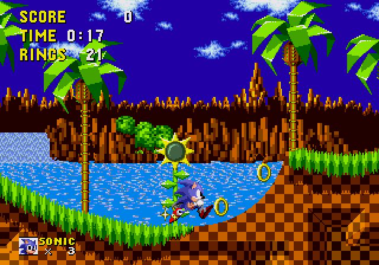
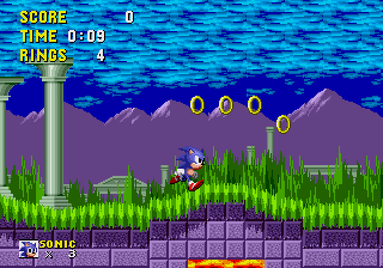
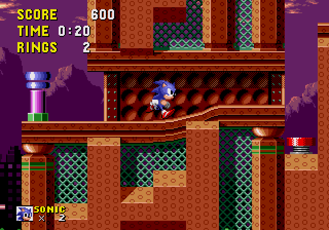
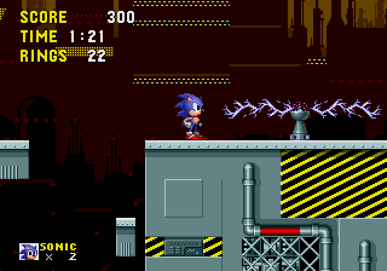

Sonic The Hedgehog (1991)
 Sonic the Hedgehog é o primeiro jogo da franquia. Lançado pela primeira vez nos Estados Unidos e na Europa em 23 de junho de 1991, foi a estreia do personagem Sonic the Hedgehog e do grupo por trás de sua criação, Sonic Team. Embora o jogo tenha obtido apenas um sucesso mediano em seu país de origem, quase da noite para o dia Sonic se tornou uma sensação no Ocidente, solidificando o lugar da Sega na Europa e transformando a empresa em um nome familiar nos Estados Unidos.
Sonic the Hedgehog é o primeiro jogo da franquia. Lançado pela primeira vez nos Estados Unidos e na Europa em 23 de junho de 1991, foi a estreia do personagem Sonic the Hedgehog e do grupo por trás de sua criação, Sonic Team. Embora o jogo tenha obtido apenas um sucesso mediano em seu país de origem, quase da noite para o dia Sonic se tornou uma sensação no Ocidente, solidificando o lugar da Sega na Europa e transformando a empresa em um nome familiar nos Estados Unidos.
Nessa página, iremos abordar algumas curiosidades do desenvolvimento, como fases e alguns dos protótipos descobertos.
Fases
Green Hill Zone
- Em uma entrevista com Yuji Naka, programador da série, ele afirma que a Green Hill Zone foi a fase que mais levou tempo de produção até ser finalizada, levando pouco mais de seis meses. Segundo ele, o objetivo era criar um cenário com visuais mais agradáveis e belos para os padrões da época, com isso, a Green Hill zone sofreu cinco alterações completas no seu visual.
- Quando Sonic Mega Collection estava sendo desenvolvido para Nintendo GameCube, Yuji Naka planejava presentear os fãs com a versão da Green Hill Zone apresentada na Tokyo Game Show de 1990, porém, o cartucho que continha os dados da fase foi roubado.
- Por algum motivo, o efeito parallax nas nuvens da fase são mais rápidos na versão japonesa
Marble Zone
- Na parte em que o jogador precisa fugir da lava no corredor, há um bug onde um dos espinho que não causa dano ao Sonic, porém, ele é empurrado para o teto, e, caso o jogador tenha anéis, o Sonic será empurrado para os lados.
- A princípio, a Marble Zone seria a terceira fase, enquanto a Labyrinth Zone seria a segunda. Entretanto, os desenvolvedores decidiram alterar a ordem porrque viram que o nível de dificuldade da Labyrinth Zone era bem mais alto, pois queriam que a dificuldade fosse progressiva.
Sring Yard Zone
- Por mais estranho que pareça, essa fase foi a primeira a ser idealizada, e também a primeira a ser finalizada.
- A música tema dessa fase é uma homenagem a música “Lovin' You 'Sawako'" do guitarrista japonês Toshiki Kodomatsu.
- A fase 4-1 da GameLand de Sonic Colors é baseada no primeiro ato da Spring Yard Zone.
Labyrinth Zone

- Na versão original do Mega Drive de Sonic the Hedgehog, se o jogador girar ao chegar ao final do ato 2 da Labyrinth Zone, a tela irá congelar e o jogador terá que reiniciar o jogo.
- O ato 5-1 do GameLand em Sonic Colors parece ser baseado no layout de nível Labyrinth Zone.
- Essa fase apareceu no primeiro protótipo de Nick Arcade de Sonic the Hedgehog 2, embora com seus dados parcialmente sobrescritos. Eventualmente, ela foi transformada na Oil Ocean Zone.
- A fase Lost Labyrinth de Sonic 4 Episode I é inspirada nessa fase. Muitos fãs acreditam que esse seja o mesmo local, só que em outra época.

- Gigalopolis Zone, uma fase de Sonic Chaos, tem algumas semelhanças com a Star Light Zone, mas com revestimento de metal azul em vez de verde. Uma vez que ambas as zonas estão localizadas na Ilha do Sul, é razoável supor que elas possam ser geograficamente adjacentes.
- Essa é a única fase que apresenta cenários tanto em primeiro plano quanto em segundo plano.
- A música tema da Star Light Zone aparece como música desbloqueável em Sonic Generations.
Scrap Brain Zone
- A Scrap Brain Zone é a única fase que não dá ao jogador a oportunidade de teletransportar para o Special Stage, mesmo se ele tiver anéis suficientes. Isso ocorre porque parte da VRAM utilizada pelo Giant Ring é usada para os efeitos de fumaça animada no fundo.
- Essa também é a única fase a ter um fundo diferente para cada ato, visto que as outras zonas utilzam o mesmo fundo em todos os atos.
- O ato 3 da Scrap Brain Zone é o único que não mostra uma pontuação ao terminar a fase.